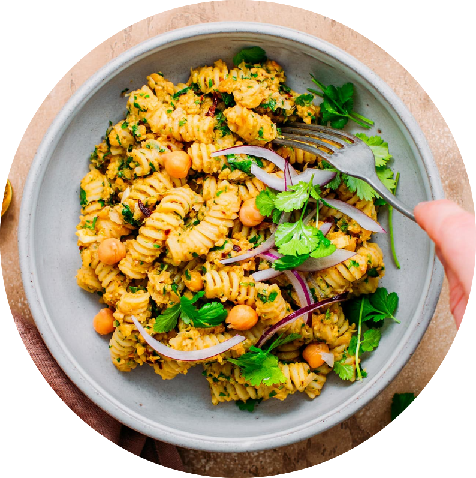
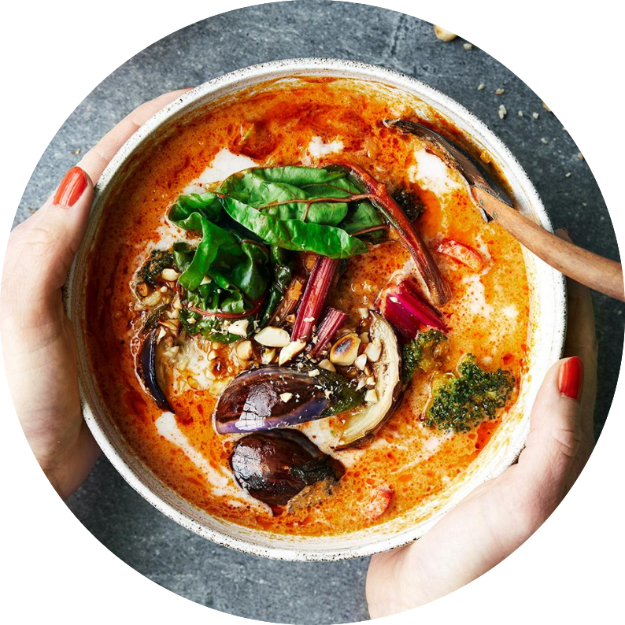

JA, DU LÆSTE RIGTIG! DET ER RENT FAKTISK VODKA I DENNE RET..
MEN DET KUN FOR DEN TRADIONELLE SMAG OG KAN GODT LAVES UDEN
INGREDIENSER
MÅSKE SYNES DU OGSÅ OM DISSE OPSKRIFTER?

FALAFEL PASTA


LINSE SUPPE

PASTA BOLONEGSE